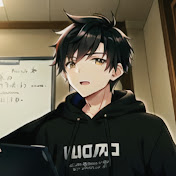
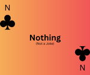

|  | |
|
 | |
Remote has been doing youtube for some time accumulating 23 subscribers and becoming a VTuber. He does ASMR we quess. Also every once in a while he does a heart to heart. Remote's most popular video is on Dead Chums, coming in at 107 views, Good Job Mr. Potato.
Check Remote Out Here: Remote Potato YT and Remote Potato Twitch